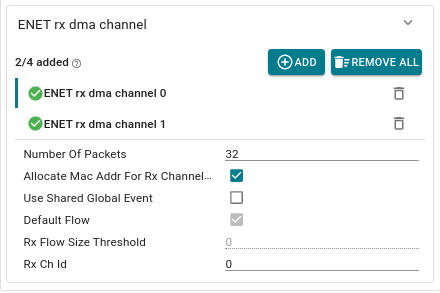
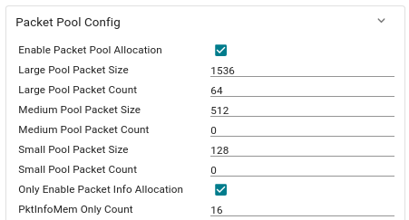
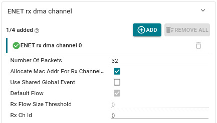
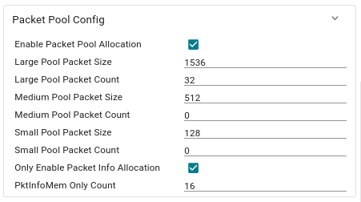
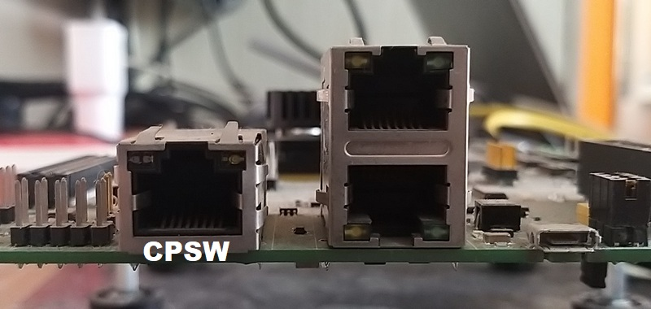

Introduction
- Note
- lwIP features are made available as is from public lwIP project. SDK configuration may only enable and exercise a subset of these features.
This example is a TCP/UDP IP application using the LwIP networking stack, coupled with ethernet driver (ENET-LLD)
On AM64X, we can do ethernet based communication using ICSSG Hardware peripheral
- ICSS
- This is a firmware enabled ethernet switch + port HW
- This HW can be used with industrial communication protocols as well
- In this example we use ICSS as a standard ethernet port
It uses ENET ethernet driver underneath with LwIP TCP/IP networking stack
This example shows about how to implement a simple TCP Server on LwIP networking stack using netconn API coupled with ethernet driver (ENET). On AM64X, we can do ethernet based communication using ICSSG as HW mechanism
- NOTE: Dual MAC mode doesn't imply both ports being used.
- To enable dual MAC/Dual Netif mode, two instances of the ICSSG peripheral have to be initialised in the syscfg
- The default configuration for this example is set to Dual Netif mode.
- ICSSG is a standard ethernet switch + port HW
- It uses ethernet driver underneath with LwIP TCP/IP networking stack
- ICSSG can be configured in two modes: Switch or MAC.
- Using Dual LwIP Netif with two ICSSG instances
The example does below
- Initializes the ethernet driver for both the ICSSG MAC instances.
- Initializes the LwIP stack for TCP/UDP IP and Starts TCP Server task.
- TCP Server task waits for connection from client on port 8888. When connection is established, it waits for any message from client.
- TCP Server task sends back "Greetings from Texas Instruments!" message back to client and closes the connection.
Supported Combinations
| Parameter | Value |
| CPU + OS | r5fss0-0_freertos |
| Toolchain | ti-arm-clang |
| Board | am64x-evm |
| Example folder | examples/networking/lwip/enet_icssg_tcpserver |
Configuring Syscfg
- Following Syscfg option allows flexibility to configure memory foot print based on required use case like: Number of DMA descriptors and buffering.
- Supported Options with default configuration
Configuring Syscfg
- Following Syscfg option allows flexibility to configure memory foot print based on required use case like: Gigabit Ethernet Support Enable, premption support, McM Support and QoS level required.
- Supported Options with default configuration
| Feature | Description | Remarks/Default Setting
|
| Pkt Pool Enable Flag | Flag to enable packet allocation from enet utils library. It should be disabled to avoid utils memory wastage, in case application allots packet via other mechanism. (Ex- Lwip pools) | Default is true. It is disabled for lwip based examples. If enabled size of pkt pool size depends on Number of Tx Packet and Number of Rx Packet.
|
| Number of Tx Packet | No of Tx packets required for DMA channel | Default is 16. It contributes to the size of Pkt Mem Pool, DMA ring buffer and accessories.
|
| Number of Rx Packet | No of Rx packets required for DMA channel | Default is 32. It contributes to the size of Pkt Mem Pool, DMA ring buffer and accessories size.
|
| QoS Level | No of QoS level required | Can be in between 1-8. Higher QoS level will be serviced by adding more number of buffers.
|
| Premption Enable | Flag to enable premption | Default is false. If enabled will add premption buffer to service the feature.
|
| Gigabit Support | Decides buffer pool allocation based on interface speed selected | Default is true. Enabling this option will increase buffer requirement as more buffering required at gigabit speed.
|
| Netif instance | TI Networking / Enet (ICSSG) / LWIP Interface config | No of netifs allocated by the example | Only one netif should be set to default when more than one netif is allocated. |
To Configure Static IP
Please refer to Ethernet LwIP TCP/IP Static IP.
Configuring ICSSG Switch and DUAL MAC modes
- ICSSG Switch mode requires Two RX DMA channels whereas MAC mode requires only One RX DMA channels. Out of box, the example is configured to be in Switch mode.
- When switching between these two modes, user needs to take care of removing or adding RX DMA channels and adjusting Number of RX packets accordingly in Packet Pool Config.
- Syscfg checks are in place to throw a warning for an incorrect configuration.
- Configurations for RX DMA channels and corresponding Packet Pool config is shown below:
ICSSG SWITCH
- Configurations for RX DMA channel can be located in Syscfg Tool under path: "TI Networking"→"Enet (ICSS)"→ "DMA channel config"→ "ENET rx dma channel"

ICSSG Switch RX channel configuration
- Configurations for Packet pool can be located in Syscfg Tool under path: "TI Networking"→"Enet (ICSS)"→ "Packet Pool Config"

ICSSG Switch Packet Pool configuration
ICSSG DMAC
- DMAC doesn't imply both MAC PORTs being used. It used only one MAC at a time.
- To enable DMAC, two ICSSG peripheral modules have to created in SYSConfig.
- Configurations for RX DMA channel can be located in Syscfg Tool under path: "TI Networking"→"Enet (ICSS)"→ "DMA channel config"→ "ENET rx dma channel"

ICSSG DMAC RX channel configuration
- Configurations for Packet pool can be located in Syscfg Tool under path: "TI Networking"→"Enet (ICSS)"→ "Packet Pool Config"

ICSSG DMAC Packet Pool configuration
TCP Client using ncat tool
Ncat is a general-purpose command-line tool for reading, writing, redirecting, and encrypting data across a network. It aims to be your network Swiss Army knife, handling a wide variety of security testing and administration tasks. Ncat is suitable for interactive use or as a network-connected back end for other tools.
- Ncat is started as server to which EVM connects.
- Version used for this example Version 7+ ( https://nmap.org/ncat )
Steps to Run the Example
Build the example
- When using CCS projects to build, import the CCS project for the required combination and build it using the CCS project menu (see Using SDK with CCS Projects).
- When using makefiles to build, note the required combination and build using make command (see Using SDK with Makefiles)
HW Setup
- Note
- Make sure you have setup the EVM with cable connections as shown here, EVM Setup. In addition do below steps.
AM64X-EVM
For ICSSG based example
- Connect a ethernet cable to the EVM from host PC as shown below

Ethernet cable for ICSSG based ethernet
Create a network between EVM and host PC
- The EVM will get an IP address using DHCP, so make sure to connect the other end of the cable to a network which has a DHCP server running.
- To get started one can create a simple local network between the EVM and the host PC by using a home broadband/wifi router as shown below. Most such routers run a DHCP server

Local network between PC and EVM
- To check the router connection with host PC, recommend to disconnect all other networking conenctions on the PC, sometimes you may need to disable firewall SW, and make sure the router is able to assign a IP address to your host PC
- After we run the example on the EVM (next step), the EVM will similarly be assigned a IP address, and then host can communicate with the EVM using the assigned IP address.
Run the example
- Attention
- If you need to reload and run again, a CPU power-cycle is MUST
- Launch a CCS debug session and run the example executable, see CCS Launch, Load and Run
- You will see logs in the UART terminal as shown in the next section.
- Note the IP address seen in the log, this is what we will use to communicate with the EVM.
Sample output log
==========================
ICSSG LWIP TCP ECHO SERVER
==========================
Enabling clocks!
Enabling clocks!
Mdio_open: MDIO Manual_Mode enabled
EnetPhy_bindDriver: PHY 3: OUI:080028 Model:0f Ver:01 <-> 'dp83869' : OK
PHY 3 is alive
PHY 15 is alive
Mdio_open: MDIO Manual_Mode enabled
EnetPhy_bindDriver: PHY 15: OUI:080028 Model:0f Ver:01 <-> 'dp83869' : OK
PHY 3 is alive
PHY 15 is alive
Starting lwIP, local interface IP is dhcp-enabled
[LWIPIF_LWIP] NETIF INIT SUCCESS
Host MAC address-0 : f4:84:4c:fb:c0:42
[LWIPIF_LWIP] Enet has been started successfully
[0]Enet IF UP Event. Local interface IP:0.0.0.0
[LWIPIF_LWIP] NETIF INIT SUCCESS
Host MAC address-1 : 70:ff:76:1e:3a:07
[1]Enet IF UP Event. Local interface IP:0.0.0.0
[0]Waiting for network UP ...
Icssg_handleLinkUp: icssg1-1: Port 1: Link up: 100-Mbps Full-Duplex
[0]Network Link UP Event
[1]Waiting for network UP ...
Icssg_handleLinkUp: icssg1-2: Port 2: Link up: 1-Gbps Full-Duplex
[1]Network Link UP Event
[0]Waiting for network UP ...
[1]Enet IF UP Event. Local interface IP:192.168.1.10
Network is UP ...
13.275s : CPU load = 3.16 %
[0]Enet IF UP Event. Local interface IP:10.10.1.10
18.276s : CPU load = 3.12 %
23.277s : CPU load = 3.09 %
28.278s : CPU load = 3.09 %
accepted new connection 70128D20
33.279s : CPU load = 3.14 %
accepted new connection 70128D20
38.280s : CPU load = 3.12 %
43.281s : CPU load = 3.12 %
48.282s : CPU load = 3.09 %
53.283s : CPU load = 3.10 %
Steps to execute
- Run example on EVM
- Try to reach the EVM using ping as shown below, using a command shell on the host PC "192.168.1.10" should be replaced with IP of EVM.
Start TCP client using 'ncat' cmds as shown below. Below steps have been tried with a Linux Ubuntu 18.04 host PC running bash shell
Install 'ncat' if not installed by doing below
Invoke 'ncat' to connect to EVM IP
$ncat 192.168.1.10 8888
$
"192.168.1.10" should be replaced with EVM IP.
- Send any msg in ncat terminal and wait for reply from EVM.
- Close the connection using Ctrl + C.
Troubleshooting issues
- If you see MAC address as
00:00:00:00:00:00, likely you are using a very early Si sample which does not have MAC address "fused" in, in this case do below steps
- Open file `source/networking/.meta/enet_icss/templates/enet_soc_cfg_am64x_am243x.c.xdt
- Uncomment below line
#define ENET_MAC_ADDR_HACK (TRUE)
- Rebuild the libraries and examples (Using SDK with Makefiles)
- If you see a valid, non-zero MAC address and continuosly seieing "Waiting for network UP..." prints in UART terminal
- Make sure you see
Enet IF UP Event. message, if not check the ethernet cable
- Check the local network and check if the DHCP server is indeed running as expected
- When using a home broadband/wifi router, its possible to check the clients connected to the DHCP server via a web browser. Check your router user manual for more details.
See Also
Ethernet And Networking Ethernet PRU_ICSSG instance-0 (PRU_ICSSG0) USAGE GUIDE
 1.8.20
1.8.20